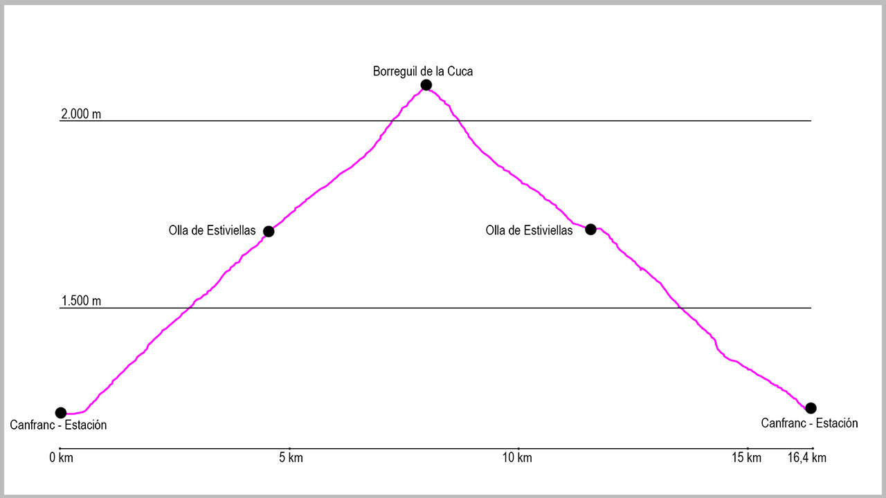

Desde el puente de la Estación de Canfranc, cogeremos la calle principal en dirección norte. Al llegar al final del pueblo tomaremos la última calle a nuestra izquierda, llamada Paseo de Los Ayerbe. Nada más comenzar subiremos una fuerte cuesta y tras girar a nuestra izquierda encontraremos un cartel sobre un muro a nuestra derecha, que marca el inicio del camino. Este sendero nos conducirá por una cómoda subida hasta el camino principal de Estiviellas. Una vez llegados a este cruce, tomaremos la bifurcación a nuestra derecha.
A lo largo de la subida tendremos dos cruces que saldrán a nuestra izquierda para ver diferentes miradores (si decidimos visitar alguno de ellos tenemos que volver siempre al camino principal).
El camino prosigue cómodamente hasta salir del bosque, donde continúa por una zona con alguna piedra hasta llegar, tras unas pocas curvas más a la Cola del Caballo.
Seguiremos en este punto nuestra ascensión por un cómodo camino que tras un kilómetro aproximadamente nos llevará a la Olla de Estiviellas. Justo al llegar encontraremos un cruce a nuestra derecha que nos indica “Collado de Estiviellas”. Lo tomaremos y continuaremos nuestra suave ascensión.
Pasados ya cerca de 2 kilómetros desde el último cruce, veremos en una curva a la izquierda un cartel que nos marca al “Pico del Águila” en dirección a nuestra derecha. Obviaremos esta bifurcación siguiendo en dirección ascendente a la izquierda y enlazando curva tras curva hasta llegar a dar vista a todo el circo de la Garganta de Borau, Aspe y la zona de Tortiellas.
Justo al salir al collado, giraremos a nuestra derecha para dirigirnos por la cresta a nuestro objetivo: el Borreguil de la Cuca. En los últimos treinta metros tendremos que apoyarnos en alguna piedra con las manos para subir, pero sin ningún paso complicado.
Nuestro regreso transcurrirá por el mismo recorrido de subida. Obviando también el cruce al “Pico del Aguila”, seguiremos por el sendero lleno de curvas hasta llegar al cruce de la Olla de Estiviellas. Lo tomaremos entonces a nuestra derecha, bajando por la zona de Secras, convirtiendo la ruta de esta manera en circular.
La bajada es muy cómoda, y tras descender casi 200 metros negativos llegaremos al antiguo vivero de Secras. Seguiremos en este punto el camino que nos llevará hasta el punto de partida.
Nos encontraremos ya casi al final dos cruces a nuestra izquierda, pero nosotros seguiremos en ambos a la derecha de forma descendente. Una vez lleguemos al paseo de los Ayerbe, giraremos a la izquierda, para tras pasar un pequeño puente con la barandilla verde girar a nuestra derecha y llegar de nuevo al inicio de la ruta.
